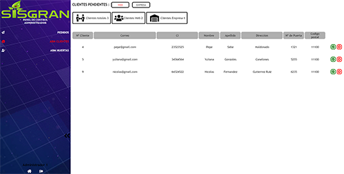
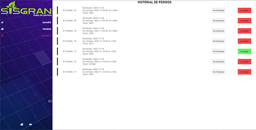
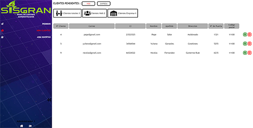
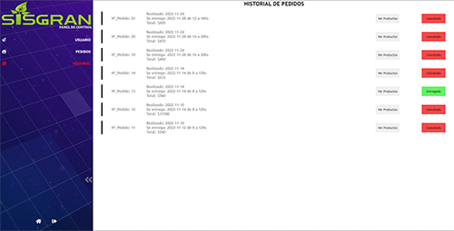

Mi nombre es Nahuel Galeano, tengo 23 años, soy un estudiante en la
carrera de ingeniería en computación y autodidacta, apasionado por el
mundo del desarrollo web y la programación.
Mi orientacion es Full-Stack, mas centrado en back-end que front-end.
Estoy ansioso por seguir aprendiendo y adquiriendo experiencia en el
campo profesional.
Tengo conocimientos avanzados en tecnologías como Python, React.js,
JavaScript (frameworks y librerías), jQuery, AJAX, JSON, PHP, MySQL,
MongoDB, HTML y CSS.
Además, soy miembro activo de la comunidad de programadores en Stack
Overflow en español, con una reputación de +300 puntos.
Creo que ser un desarrollador Full Stack significa no tener miedo a
los desafíos y tener la capacidad de aprender continuamente para
abordar nuevos proyectos con eficiencia.
Iam Nahuel Galeano, with 23 years old, I am a computer engineering
student and self-taught, passionate about the world of web development
and programming.
My orientation is Full-Stack, more focused on back-end than front-end.
I am ready to continue learning and gaining experience in the
professional field.
I have advanced knowledge in technologies such as Python, React.js,
JavaScript (frameworks and libraries), jQuery, AJAX, JSON, PHP, MySQL,
MongoDB, HTML and CSS.
In addition, I am an active member of the community of programmers on
Stack Overflow in Spanish, with a reputation of +300 points.
I believe that being a Full Stack developer means not being afraid of
challenges and having the ability to continuously learn to tackle new
projects efficiently.
Poseo amplios conocimientos en el desarrollo de aplicaciones con
Python utilizando frameworks como FastAPI, Flask, DJango y Tkinter.
Además, tengo experiencia en el desarrollo de aplicaciones web con
Javascript, incluyendo librerías como Three.js, Tagcloud.js y
Charts.js, así como habilidades avanzadas en el uso de jQuery y AJAX
para mejorar la experiencia del usuario.
También tengo experiencia en el desarrollo web con PHP, utilizando
bases de datos relacionales como MySQL y no relacionales como MongoDB.
Tengo un conocimiento avanzado en HTML y CSS para el diseño y la
maquetación web, lo que me permite crear aplicaciones web dinámicas y
atractivas, así como soluciones tecnológicas innovadoras para los
problemas más complejos.
I have extensive knowledge in developing applications with Python
using frameworks such as FastAPI, Flask, DJango and Tkinter.
Also, I have experience developing web applications with Javascript,
including libraries like Three.js, Tagcloud.js and Charts.js, as well
as advanced skills in using jQuery and AJAX to improve the user
experience.
I also have experience in web development with PHP, using relational
databases like MySQL and non-relational databases like MongoDB.
I have an advanced knowledge of HTML and CSS for web design and
layout, which allows me to create dynamic and attractive web
applications, as well as innovative technological solutions for the
most complex problems.
Bueno, este fue mi mayor proyecto. Se trata de una aplicación web para el control y administración de un sistema de huertas ecológicas. Este sistema cuenta con login y registro funcional con control de acceso por administración, sistema completo de cosecha y cultivos (sofisticado) con control de tiempos automáticos, sistema de notificaciones, controles gráficos de las ventas web y locales, panel para los vendedores locales, panel dinámico para los repartidores, sistema de compras con control de stock, métodos de pago a través de PayPal, salida de facturación y más cosas.
Well this was my biggest project. It is a web application, for the control and Administration of a system of Ecological Gardens. This system It has login and functional registration with access control by administration, complete harvesting system and crops (sophisticated) with automatic time control, system notifications, graphic controls of web and local sales, panel for local vendors, dynamic panel for distributors, purchasing system with stock control, methods of payment through PAYPAL, billing output and more things.


 



Esta página la desarrollé para poder concentrar todos mis trabajos y proyectos, actuales y futuros. Optimicé el código lo más posible y lo desarrollé utilizando los mejores métodos que tenía a mi alcance. En este sitio voy a estar actualizando mis proyectos y contando en qué estoy enfocado actualmente para no perder el hilo de mi desarrollo.
I developed this page to be able to concentrate all my work and current and future projects. I optimized the code as much as possible and developed it using the best methods that I had at my disposal. In this site I will be updating my projects and counting on what I am currently focused so as not to lose the thread of my development.

Este es un proyecto corto pero muy útil que desarrollé en Python. Esta herramienta combina símbolos, números y letras de manera aleatoria, alcanzando los 32 caracteres por defecto.
This is a short but very useful project I developed it in Python, This tool combines symbols, numbers and letters of randomly reaching 32 characters by default.


Este fue uno de mis primeros proyectos relacionados con el FrontEnd. La página quedó bastante funcional. Tenía un buscador activo, enlaces, contador de seguidores, animaciones, reproducción automática de videos, ajustes, etc. Para ser uno de mis primeros proyectos, quedó bastante bien realizado.
This was one of my first projects related to the FrontEnd. The page was quite functional, active search engine, links, follow counter, animations, automatic playback of videos, settings, etc. to be of my First projects were quite well done.
Esta galería no tenía un propósito como tal, pero la realicé por puro aburrimiento. Quedó bien siguiendo el nivel que tenía en ese momento. Cuenta con varias categorías y un panel para contacto y valoración de la página.
This gallery did not have a purpose as such, but I made it for pure boredom, it was good following the level it had at that time moment. It has several categories and a panel for contact and page rating.
Esta página la hicimos junto a un compañero, la cual quedó muy funcional, con login activo, buscador, control de stock, elección de modelos, métodos de pago, métodos de envío, calculadora final, calculadora de IVA, facturación, etc. Nos gustó mucho y quedó muy bien.
We made this page together with a friend, was very functional, with active login, search engine, stock control, choice models, payment methods, shipping methods, final calculator, VAT calculator, billing, etc. We liked it a lot and it was very good.
Aquí les dejo mi generador de contraseñas por si les es útil. Pueden generarlas las veces que quieran y tendrán integrado el botón para copiarla.
Here I leave my password generator in case it is useful, you can generate as many times as you want and you will have the button integrated to copy it.
10
Generate Copy